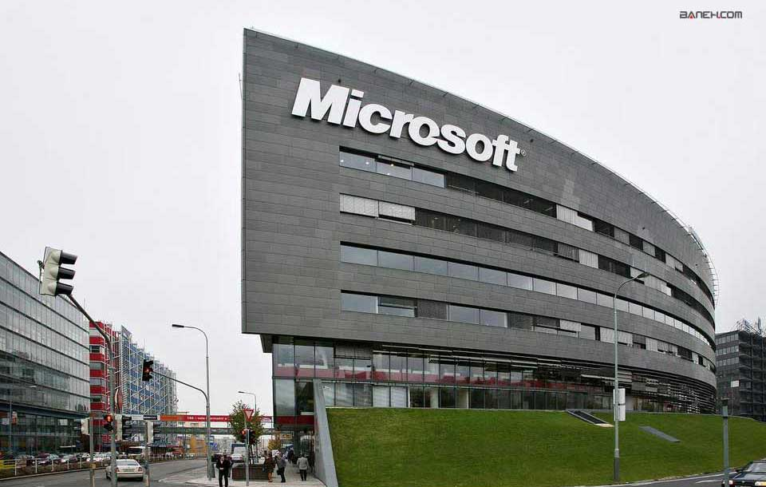
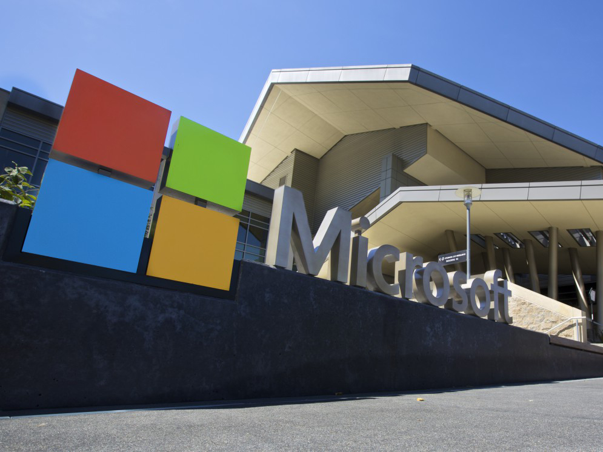
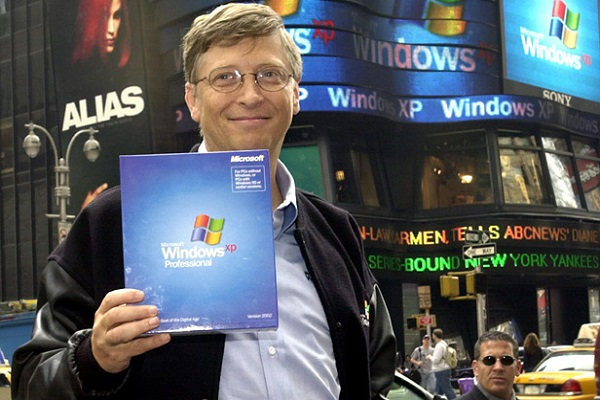

شرکت مایکروسافت کامپیوتری آمریکایی و چندملیتی است، که دفتر مرکزی آن در شهر ردموند، ایالت واشینگتن، ایالات متحده آمریکا قرار دارد. این شرکت، بزرگترین شرکت ارائه نرمافزار رایانه در دنیاست، که به انتشار کتاب و تولید محصولات چندرسانهای و ارائه خدمات پست الکترونیکی نیز میپردازد.
مایکروسافت در سال مالی منتهی به ژوئن ۲۰۱۰ میلادی، بیش از ۶۲ میلیارد دلار درآمد فروش، بیش از ۱۸ میلیارد دلار سود خالص و ۸۹٬۰۰۰ کارمند در کشورهای مختلف دنیا داشته است.[۳][۴] فعالیت اصلی آن در زمینهٔ طراحی، توسعه، ساخت، صدور مجوز، پشتیبانی و ارائهٔ خدمات نرمافزاری برای ابزارهای رایانهای میباشد.

پرفروشترین محصولات مایکروسافت، سیستمعامل «ویندوز» و نرمافزار «آفیس» است و شعار اصلی شرکت «یک رایانه روی هر میز و در هر خانه، که نرمافزارهای مایکروسافت را اجرا کند.» میباشد.[۷][۸][۹][۱۰][۱۱][۱۲][۱۳] این دو محصول با سهمی حدود ۹۰٪ در سال ۲۰۰۳ برای مایکروسافت آفیس و در سال ۲۰۰۶ برای ویندوز جایگاه مهمی در بازار فروش محصولات کامپیوترهای شخصی و کامپیوترهای رومیزی پیدا کردند.
مایکروسافت که در ابتدا کار خود را توسط دو دوست دوران کودکی به نامهای بیل گیتس و پُل جی. آلن با ساخت و فروش مفسر زبان برنامهنویسی بیسیک (Basic interpreters) برای «آلتایر» (Altair) شروع کرد، در اواسط دههٔ ۸۰ میلادی با طراحی سیستمعامل داس بر بازار سیستمهای عامل رایانههای خانگی مسلط شد.

شرکت مایکروسافت همواره هدف نقدهای مختلفی از جمله انحصارطلبی بوده، که موجب تشکیل دادگاههای قضایی بسیاری علیه آن، به علت تجاوز از قوانین انحصار، در وزارت دادگستری ایالات متحده آمریکا و کمیسیون اروپا شده است.[۱۷][۱۸]
مایکروسافت علاوه بر بازار سیستمعامل و نرمافزار اداری، در زمینههای دیگر هم فعالیت میکند مانند: شبکه تلویزیونی
اماسانبیسی "MSNBC"، سایت اینترنتی «اماسان» و دانشنامه چندرسانهای انکارتا (که دیگر انتشار نمییابد). همچنین در زمینه تولید سختافزار رایانه، با ساخت محصولاتی مانند موشواره و نیز سرگرمیهای خانگی، از جمله ایکسباکس، ایکسباکس ۳۶۰ و زون(zune) نیز میپردازد. مایکروسافت از گذشته تاکنون با استفاده از روشهای مختلف مانند گروه خبری «یوزنت» "Usenet" و وب، پشتیبانی از نرمافزارهای خود را همواره ادامه دادهاست و جایزهٔ
«امویپی» Microsoft MVP را به داوطلبانی که در کمک به مشتریان شرکت مفید بوده باشند، اهدا میکند.
